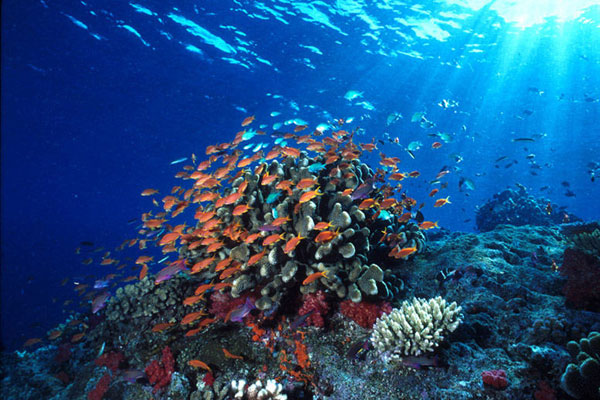

Sejarah
Asal mula Kota Manado menurut legenda dulu berasal dari “Wanua Wenang” sebutan penduduk asli Minahasa. Wanua Wenang telah ada sekitar abad XIII dan didirikan oleh Ruru Ares yang bergelar Dotulolong Lasut yang saat itu menjabat sebagai
Kepala Walak Ares,dikenal sebagai Tokoh pendiri Wanua Wenang yang menetap bersama keturunannya.
lain mengatakan bahwa Kota Manado merupakan pengembangan dari sebuah negeri yang bernama Pogidon.Kota Manado diperkirakan telah dikenal sejak abad ke-16. Menurut sejarah, pada abad itu jugalah Kota Manado telah didatangi oleh orang-orang
dari luar negeri. Nama "Manado" daratan mulai digunakan pada tahun 1623 menggantikan nama "Pogidon" atau "Wenang". Kata Manado sendiri merupakan nama pulau disebelah pulau Bunaken, kata ini berasal dari bahasa daerah Minahasa yaitu
Mana rou atau Mana dou yang dalam bahasa Indonesia berarti "di jauh". Pada tahun itu juga, tanah Minahasa-Manado mulai dikenal dan populer di antara orang-orang Eropa dengan hasil buminya. Hal tersebut tercatat dalam dokumen-dokumen
sejarah.
Geografis
Kota Manado terletak di ujung jazirah utara pulau Sulawesi, pada posisi geografis 124°40' - 124°50' BT dan 1°30' - 1°40' LU. Iklim di kota ini adalah iklim tropis dengan suhu rata-rata 24° - 27 °C. Curah hujan rata-rata 3.187 mm/tahun
dengan iklim terkering di sekitar bulan Agustus dan terbasah pada bulan Januari. Intensitas penyinaran matahari rata-rata 53% dan kelembaban nisbi ±84 %.
Luas wilayah daratan adalah 15.726 hektare. Manado juga merupakan kota pantai yang memiliki garis pantai sepanjang 18,7 kilometer. Kota ini juga dikelilingi oleh perbukitan dan barisan pegunungan. Wilayah daratannya didominasi oleh kawasan
berbukit dengan sebagian dataran rendah di daerah pantai. Interval ketinggian dataran antara 0-40% dengan puncak tertinggi di gunung Tumpa.
Wilayah perairan Kota Manado meliputi pulau Bunaken, pulau Siladen dan pulau Manado Tua. Pulau Bunaken dan Siladen memiliki topografi yang bergelombang dengan puncak setinggi 200 meter. Sedangkan pulau Manado Tua adalah pulau gunung dengan
ketinggian ± 750 meter.
Ekonomi
Sebagian besar penduduk Kota Manado bekerja sebagai Pegawai Negeri Sipil (PNS), guru atau pegawai swasta (41,44%), sebagai wiraswasta (20,57%), pedagang (12,85%), petani/peternak/nelayan (9,17%), buruh (8,96%). Sisanya bergerak di sektor
jasa dan lain-lain (7%).
Angka Produk Domestik Regional Bruto (PRDB) Kota Manado tahun 2000 adalah Rp. 2,14 triliun. Angka tersebut jauh lebih tinggi dibandingkan angka tahun 1994 yang berjumlah Rp. 703,87 miliar. Tingkat pertumbuhan yang dicapai dalam kurun waktu
tersebut rata-rata 6,11% per tahun. Pada tahun 1994 sampai 1996 angka pertumbuhan berada di atas 10% kemudian melambat menjadi 2,92% pada tahun 1997 dan 0,32% pada tahun 1998 di mana merupakan angka terendah. Pada tahun 1999, pertumbuhan
meningkat lagi menjadi 1,60% dan pada tahun 2000 menjadi 5,62%.
Wisata
Sebagai kota terbesar di wilayah ini, Manado merupakan tempat pariwisata yang penting bagi pengunjung. Ekowisata merupakan atraksi terbesar Manado. Selam Scuba dan snorkelling di pulau Bunaken juga merupakan atraksi populer. Tempat lain
yang menarik adalah Danau Tondano, Gunung Lokon, Gunung Klabat dan Gunung Mahawu.
Bunaken

Primadona pariwisata kota Manado bahkan Provinsi Sulawesi Utara adalah Taman Nasional Bunaken yang oleh sementara orang disebut sebagai salah satu taman laut terindah di dunia. Taman Laut Bunaken adalah salah satu dari sejumlah kawasan
konservasi alam atau taman nasional di Indonesia. Taman Laut Bunaken terkenal oleh formasi terumbu karangnya yang luas dan indah sehingga sering dijadikan lokasi penyelaman oleh turis-turis mancanegara. Pulau Bunaken adalah salah
satu dari 5 pulau yang tersebar beberapa kilometer dari pesisir pantai Kota Manado. Letaknya yang hanya sekitar 8 Km dari daratan kota Manado dan dapat ditempuh dalam sekitar setengah sampai 2 jam, menyebabkan Taman Nasional ini
mudah dikunjungi.
Kelenteng Ban Hin Kiong
Objek wisata lain yang menonjol di kota Manado adalah Kelenteng Ban Hin Kiong di kawasan Pusat Kota yang dibangun pada awal abad ke-19 dan diperbaiki pada tahun 1970. Klenteng ini terletak di Jalan Panjaitan. Klenteng ini terdiri dari
bangunan yang dihiasi dengan ukiran-ukiran naga dan tongkat kayu berapi. Saat yang paling baik untuk mengunjungi klenteng ini yaitu pada saat Tahun Baru Imlek, saat dipertunjukkannya tarian tradisional Tionghoa. Juga pada saat
kedatangan parade tradisional Tionghoa, Tai Pei Kong yang berasal dari abad ke-14. Peristiwa tersebut merupakan festival "Taoist" tahunan terbesar yang diadakan di Asia Tenggara, sehingga menarik pelancong dari negara lain.
Monumen Yesus Memberkati
Sebuah monumen yang diresmikan pada akhir tahun 2007 dan menjadi ikon baru kota Manado adalah Monumen Yesus Memberkati. Bangunan ini didirikan di atas bukit di perumahan Citraland Manado dan memiliki ketinggian 50 meter di atas permukaan
tanah. Bangunan yang diprakarsai oleh Ir. Ciputra ini merupakan monumen Yesus Kristus yang tertinggi di Asia dan ke dua di dunia setelah Christ the Redeemer.